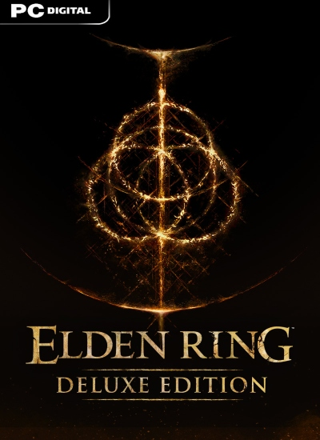

Elden Ring
Elden Ring para PC es un RPG de acción (ARPG) escrito por las superestrellas George RR Martin
(el autor de la serie de libros "Song of Ice and Fire" que engendró la serie de televisión "Game of Thrones")
y Hidetaka Miyazaki (que es famoso por muchos videojuegos, como los de la serie Souls, Bloodborne o Sekiro, entre otros).
El Círculo de Elden ha sido destruido y sus fragmentos se han esparcido por las tierras, formando las Grandes Runas. Algunos de estos fragmentos han caído en manos de los hijos de la reina Márika la Eterna,
y la promesa de aún más poder ha corrompido a cada uno de los seis semidioses.
Las personas que viven en la tierra, solían disfrutar de la Gracia del Círculo, otorgada por el Erdtree, que se mostraba con una especie de brillo dorado en los ojos: este brillo se ha desvanecido,
lo que indica la pérdida de la Gracia,
y los que quedan son ahora llamados 'Sinluz'. Eres uno de ellos, un exiliado de las Tierras Intermedias, debido a la pérdida de Gracia,
y ahora es tu trabajo encontrar los fragmentos, restaurar el Círculo y convertirte en el Señor del Círculo, regresando el bien a la tierra.
Plataformas
Steam